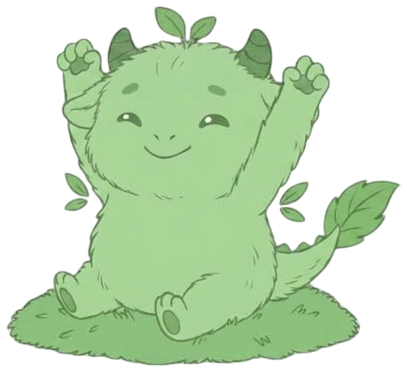
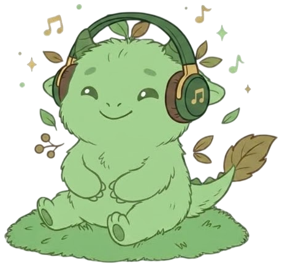
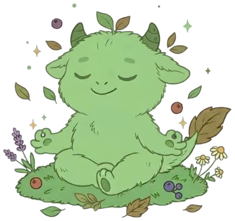
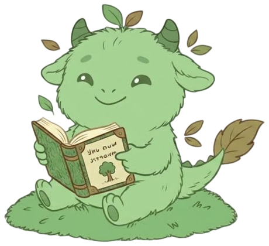

Ademhaling
In 4 · vasthouden 4 · uit 6
Loslaten
Schrijf op wat je dwarszit. Blaas het daarna weg.
- 1 · Opschrijven
- 2 · Wegblazen
- 3 · Klaar
Zet een komma tussen je zorgen. Elke zorg wordt een eigen bolletje.
🔒 Dit wordt nergens opgeslagen. Alleen jij ziet het.
🎤 Zo vraagt je browser om je microfoon. Mossy luistert alleen of je blaast en neemt niets op.

Weggeblazen 🍃
Goed gedaan. Je zorg is misschien niet helemaal weg, maar je hoeft hem nu even niet vast te houden.
Blijft het je dwarszitten? Praat erover met je mentor of SLB'er.
Geluiden
Tik om af te spelen. Tik nogmaals om te stoppen.

Mediteren
Kies een duur en kom tot rust.

Tik op Genereer voor een onderwerp om over na te denken tijdens het mediteren.
Positieve Gezondheid
Zes domeinen. Kies er één voor tips.

Lichaamsfuncties
Gezond voelen, fitheid, slapen, eten, bewegen en meer
Mentaal welbevinden
Concentreren, vrolijk zijn, jezelf accepteren, omgaan met verandering en meer
Zingeving
Zinvol leven, vertrouwen, dankbaarheid, blijven leren en meer
Kwaliteit van leven
Genieten, gelukkig zijn, balans, je veilig voelen en meer
Meedoen
Sociale contacten, erbij horen, steun van anderen en meer
Dagelijks functioneren
Zorgen voor jezelf, je grenzen kennen, omgaan met tijd, hulp vragen en meer
Heb je meer hulp nodig? Praat met een docent of maak een afspraak met je SLB'er.
Rekken
Veel gezeten? Beweeg een minuutje.
Kies een duur en druk op start.